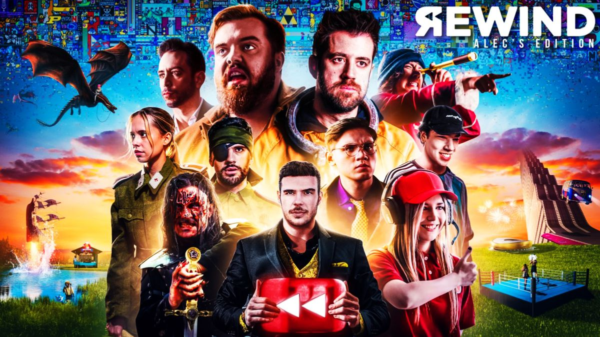

Una nueva liga de fútbol formada por 12 equipos que estarán presididos por streamers y exfutbolistas y que serán los encargados de gestionar cada uno de los clubes participantes. Una competición real en la que cada semana habrá partidos entre los 12 equipos hasta alcanzar el playoff. A partir de ese momento, los encuentros se irán sucediendo hasta proclamar al campeón de la primera edición.
Por segundo año consecutivo se celebra la 2a edicion de los Premios Esland, un reconocimiento único para creadores, creadoras y comunidades que buscan su lugar en el mundo del entretenimiento en directo. Los Premios ESLAND son una iniciativa privada promovida por el célebre streamer TheGrefg y buscan apoyar y reconocer la creación de contenido en el ámbito hispanohablante.
el Ibainéfico 2023 volvió a hacer historia, superando por segunda edición consecutiva los 200,000 euros, con un total de 208,804 euros que serán enviados directamente para ayudar a los niños que padecen cáncer.
El Rewind Hispano de este año, como es habitual, hace un resumen en tono de comedia de los momentos más destacados del año en la esfera de YouTube, Twitch y redes sociales. Esta iniciativa surgió en 2017 a raíz de que el YouTube Rewind "oficial" creado por la propia plataforma mostraba a muy pocos influencers hispanohablantes, de modo que Alec Hernández y su equipo decidieron crear como respuesta el YouTube Rewind Hispano.
